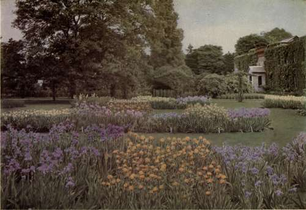

Chapter XII. Collecting And Making New Varieties
Description
This section is from the book "What England Can Teach Us About Gardening", by Wilhelm Miller. Also available from Amazon: What England Can Teach Us About Gardening.
Chapter XII. Collecting And Making New Varieties
The sort of work that Luther Burbank does with flowers is commonly done in England by amateurs — Let us collect every variety of our favourite flower and then improve it.
NEARLY all the "good fellows" in America who like a garden have their fling at making a big collection of something, e. g., every kind of rose, lily, peony, or iris. Heaven forbid that I should try to discourage this amiable weakness, for the object of gardening is to refresh our souls, and if we take everything with equal seriousness we may miss life altogether. There will always be some who find the mere act of collecting worth while. For, though you may be unable to grow fifty kinds of lilies, you are likely to find one variety that means more to you than all the others, and it is the irony of fate that you may search the books in vain for any hint of the peculiar charm of that lily — a charm which is so obvious to you and to all whom you admit to your garden.
But while I do not quarrel with you for thinking only of what you get out of it, the thing that interests me is What does humanity get out of it? If you had turned over practically every important book and magazine on gardening published between 1787 and 1900, as I have, I fear you would reply, "Nothing but a million articles that dispute about Latin names and a bunch of books that describe the hairs on the leaves." For the bold truth is that horticulture does not even get a decent set of records out of all this collecting. All the life and "fun" seem to be left in the garden. For even if collectors themselves write the books they seem to have an infallible instinct for omitting everything of human interest. Do they ever tell why one variety costs ten times as much as another— and is worth it? Or what are the great improvements to be made in any group and how they might be secured? Do they not rather swing the censer before the dull god Botany, grinding out technical descriptions (which have been better done a hundred times before) in order to "show the gardener his place," or get a reputation for profundity by the cheap and easy route?
I do not say that collecting must lead to snobbery, extravagance, selfishness. Those are excesses. On the contrary, collecting, guided by a spirit of moderation, leads to higher forms of knowledge and pleasure. So I say, "Go ahead, order your fifty roses, delphiniums or what not, and God bless you!" But while you are waiting for the plants to come from Europe, let me show you how you can get far more pleasure out of that collection than you might ever suspect. For the day may come when you will be tempted to throw away most of those varieties and never collect anything again. You will chafe at the endless bother and expense of maintaining a big collection; you may even tire of being a little tin god in your own locality. At first it thrills one's spinal column to be pointed out as "the man who can name a hundred varieties of dahlias." But you soon find that there are thousands of other people who can name a hundred varieties of something. This intellectual prowess, which once dazzled you, is now seen to be only a cheap patter that any amateur acquires after a single season with his collection. And, worse than all, you see that mere collecting is not an end in itself.
A GARDEN OF IRISES AT KEW. THIS WILL SHOW ABOUT WHAT ONE MAY EXPECT TO HAVE NEXT YEAR BY ORDERING NOW FIFTY VARIETIES OF GERMAN IRIS —A DOZEN OF EACH KIND. WHILE YOU ARE EXPERIMENTING IN PLANT BREEDING, YOUR GARDEN NEED NOT LACK BEAUTY OR INTEREST.
The better point of view will be apparent if we inquire why the books do not tell what real inducement there is for you to part with five dollars for any rare species,when you can buy the common species of the same genus for fifty cents. It will not do to say that rarity alone accounts for costliness. There may be a thousand rare species of ragweed, but nobody would give a cent to grow them. Every rare species that is offered for sale is supposed to be better in some one respect, than anything else in cultivation, or if not better it has some different human interest, wholly aside from its botanical rarity. The chances are that it is also inferior in some important respects to something that is already in common cultivation. But the all-important point is this — the rare species offers a chance for progress.
And now the secret is out. For all of us would like to make the world better, and the keenest pleasure in life is in creating — not hoarding. Therefore every one of us who makes a collection of plants ought to go a step further and produce some new varieties that will add to the world's pleasure. The collector has a great advantage over others, since, as a rule, it is only by making a good collection that one can perceive what the world really needs. For example, if you collect perennial larkspurs you can hardly escape realizing what the next great improvement in that group must be, viz., a disease-resistant stock. But if you were to judge by books you might think that we ought to concentrate on the red, orange, and yellow larkspurs, so that these might be made easy of cultivation. That problem, however, can wait. For what use are any larkspurs if they are all doomed to be disfigured by the black spot and eventually killed?
Can any one tell me why thousands of Americans order collections of plants, while only one or two will try to grow new i varieties from seeds? "Too hard," you will probably reply, or "Not time enough." One might as well say that base-ball is too difficult to learn, or that it takes too long to bring up a child. In England many, if not most, of the important improvements among ornamental plants are made by amateurs. And we will surely come to such a state. Nothing can stop it. It is not a case of duty. As soon as we get the idea that we are missing the best "fun" of all, we will tumble at it head over heels.
Continue to:
Tags
garden, flowers, plants, England, effects, foliage, gardening